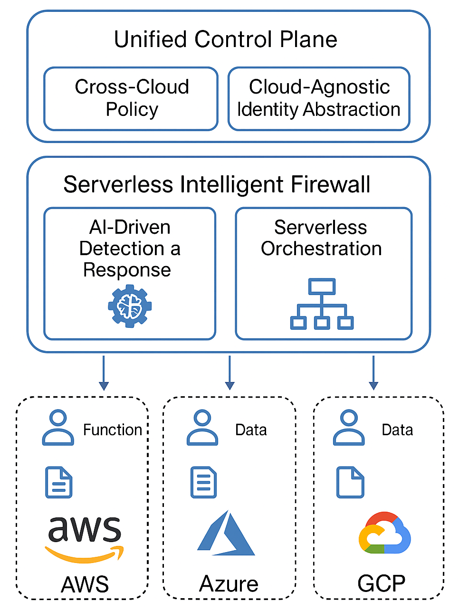
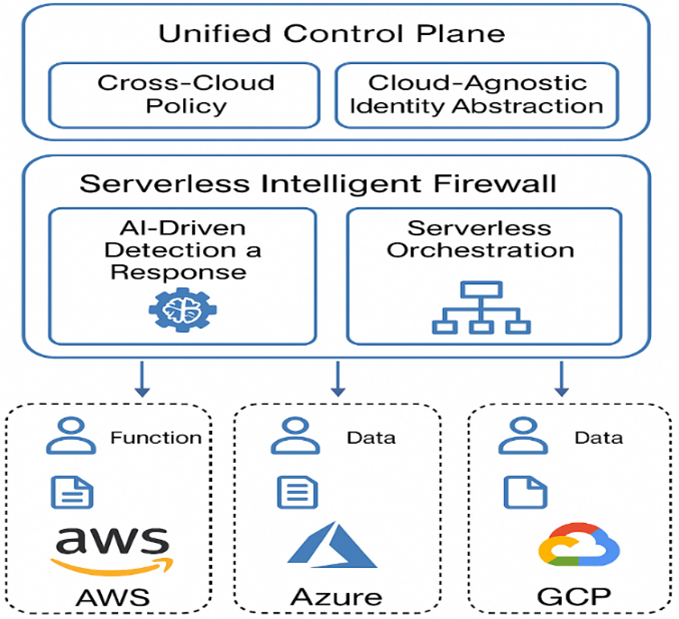

From single-cloud to cross-cloud
Research-1 emphasized LSTM-based intrusion detection in serverless contexts. Research-2 adds explicit AWS, Azure, and Google Cloud coordination with cloud-agnostic policy and event-routing layers.
Integrating Cross-Cloud Adaptation, AI-Driven Security, and Zero-Trust Architectures. This portal now includes expanded analytics dashboards, a research-to-research bridge, and a practical implementation blueprint combining both research versions.
Research Delta
Research-2 extends the original serverless intelligent firewall into a multi-cloud and policy-orchestrated security system. The core contribution is SIF-CCA: a serverless security model that combines hybrid AI detection with a unified cross-cloud zero-trust control plane.
Research-1 emphasized LSTM-based intrusion detection in serverless contexts. Research-2 adds explicit AWS, Azure, and Google Cloud coordination with cloud-agnostic policy and event-routing layers.
The proposed model fuses XGBoost feature learning with BiGRU temporal modeling. The hybrid layer improves separability over RF, standalone XGBoost, CNN, and LSTM baselines.
Beyond model quality, this version emphasizes latency, cold-start behavior, policy propagation speed, and consistency across clouds, making the research easier to map into production constraints.
Researcher Focus
This section highlights your signature contributions and links visitors directly to your most important research assets, publications, and technical profiles.
Foundation artifact introducing the AI-driven firewall concept with LSTM-centered intrusion detection and zero-trust positioning in serverless systems.
Open Research-1 websiteExtended artifact integrating hybrid AI detection, cross-cloud adaptation, and unified zero-trust policy orchestration with graph-rich technical reporting.
Explore Research-2 analyticsCentralized links to your GitHub, LinkedIn, Google Scholar, Portfolio, and ResearchGate for visibility, collaboration, and verification of authorship.
Open profile hubPublic walkthrough video and website-first communication flow for reviewers, collaborators, and readers requesting controlled access to encrypted artifacts.
Watch overview videoResearch Continuity
Research-2 is not an isolated system. It is the direct evolution of Research-1, expanding detection quality into real multi-cloud orchestration and unified zero-trust governance.
| Dimension | Research-1 | Research-2 |
|---|---|---|
| Core model | LSTM IDS | XGBoost + BiGRU |
| Cloud scope | Single-cloud oriented | AWS + Azure + GCP |
| Policy control | Zero-trust concept | Unified control plane |
| Avg response latency | N/A | 135 ms |
| Policy consistency | N/A | 99.6% |
Use these links to move between both artifacts. The combined documentation and implementation blueprint are structured to keep conceptual and technical continuity.
Overview Video
The embedded overview video gives visitors a fast way to understand the architecture, results, and motivation before requesting access to the protected manuscript.
Architecture
The architecture separates detection, orchestration, and policy governance so each cloud can respond locally while remaining under a single zero-trust policy model.

Proposed SIF-CCA architecture from the manuscript. The system combines an AI-driven detection and response engine, serverless orchestration, and a unified control plane spanning AWS, Azure, and GCP.
XGBoost learns high-value feature interactions while BiGRU captures temporal attack behavior. Their fusion layer improves precision without losing recall on noisy cloud traffic.
Event-driven functions execute detection, classification, and mitigation across cloud providers. The design targets low operational overhead and scale-to-zero efficiency.
Policy-as-code, identity abstraction, and service-to-service validation keep enforcement consistent even when workloads shift across providers.
SIF-CCA avoids provider lock-in by routing policy, telemetry, and response events through normalized cross-cloud interfaces rather than vendor-specific point logic.
Stream network telemetry and function-level events into the SIF pipeline while preserving cloud-origin metadata for policy-aware downstream analysis.

A simplified view of the unified control plane linking the firewall core to AWS, Azure, and GCP.

BENIGN, DDoS, DoS, Other, and PortScan classes show a strong diagonal with limited misclassification.

The proposed SIF-CCA model reaches the strongest ROC curve among the evaluated baselines.
Interactive Test
This browser-based simulator lets visitors test the research output without a backend deployment. It is an explainable approximation of the published decision logic, not the exact training artifact.
Enter representative traffic and policy signals, or load one of the preset scenarios.
Allow traffic and keep continuous verification active.
AWS Lambda receives the event first, then forwards policy state to Azure and GCP.
Evaluation and Analytics
This dashboard now includes multiple chart modes: bar chart, line graph, pie chart, radar chart, and scatter graph to make the results more realistic and interactive for reviewers.
| Model | Accuracy | Precision | Recall | F1 |
|---|---|---|---|---|
| RF | 94.85% | 94.47% | 94.98% | 94.22% |
| XGBoost | 95.41% | 95.02% | 95.81% | 95.91% |
| CNN | 95.56% | 95.25% | 95.93% | 95.09% |
| LSTM | 96.14% | 96.92% | 96.65% | 96.78% |
| SIF-CCA | 98.00% | 98.00% | 98.00% | 98.00% |
| Platform | Avg. latency | Cold start | Cost / 10K |
|---|---|---|---|
| AWS Lambda | 135 ms | 221 ms | $0.24 |
| Azure Functions | 142 ms | 263 ms | $0.27 |
| Google Cloud Functions | 135 ms | 249 ms | $0.25 |
| Cross-cloud avg. | 135 ms | 244 ms | $0.25 |
| Scope | Policy delay | Identity latency | Consistency |
|---|---|---|---|
| AWS | 88 ms | 110 ms | 99.6% |
| Azure | 92 ms | 116 ms | 99.4% |
| GCP | 85 ms | 108 ms | 99.7% |
| Cross-cloud avg. | 88.3 ms | 111.3 ms | 99.6% |
Real-time Deployment Blueprint
The guide below combines Research-1 and Research-2 into an actionable implementation path. It starts from the proven IDS baseline and evolves into cross-cloud adaptive enforcement.
Train and validate LSTM detection, establish feature pipeline quality, and expose model scoring through an event-driven serverless endpoint.
Add XGBoost plus BiGRU fusion for stronger static and temporal attack coverage, and calibrate thresholds for lower operational false positives.
Deploy handlers on AWS Lambda, Azure Functions, and GCP Functions with normalized event schema, queue routing, and unified telemetry.
Implement policy-as-code and identity abstraction to keep enforcement consistent across all providers during runtime and failover conditions.
For detailed architecture diagrams, step-by-step cloud mapping, rollout checklist, and combined documentation from both research phases, open the dedicated guide page.
# Simplified real-time orchestration sequence
ingest_event() -> score_with_hybrid_model()
if threat_detected:
trigger_cloud_response(provider)
evaluate_zero_trust_policy()
enforce_allow_or_block()
log_decision_to_unified_telemetry()Protected Manuscript
The site intentionally exposes only the paper cover and abstract summary. The full conference PDF and source package are provided through encrypted downloads after the policy gate.
Department of Computer and Information Science, Gannon University, USA
SIF-CCA addresses identity sprawl, fragmented cloud management, and cloud-native attack paths by combining a unified zero-trust control plane, multi-cloud serverless orchestration, and hybrid AI-driven detection.
The model reports 98% accuracy and a 0.990 ROC-AUC on a thoroughly preprocessed CIC-IDS2017 pipeline, outperforming standalone XGBoost, CNN, RF, and LSTM baselines.
Cross-cloud experiments across AWS, Azure, and Google Cloud show low-latency intrusion detection near 135 ms, linear scalability under heavy workloads, and 99.6% policy consistency under unified enforcement.
The full manuscript, PDF package, and LaTeX sources are password-protected and distributed as encrypted archives.
Research Assets
This version now contains stronger inter-links between both research artifacts, expanded graphs, and practical implementation documentation.
A web-native report that expands the manuscript into readable sections for reviewers, students, and practitioners while keeping the protected files encrypted.
Open reportGraphical and practical guidance to implement the Serverless Intelligent Firewall in real-time by combining lessons from Research-1 and Research-2.
Open guideA poster-style summary for quick review and conference-style presentations using the same assets and secure download workflow.
Open posterThe original research baseline and portal. This site now links directly to it so readers can compare progression clearly.
Open Research-1 websiteThe conference PDF and LaTeX source package are published only as encrypted zip archives. The gate enforces the same policy flow as the first portal.
All primary profiles and contact channels for collaboration, citation, and password requests are collected in one place.
Open profilesAuthor Profiles
All public profiles are linked directly so visitors can verify authorship, follow ongoing work, and request access through expected channels.
Professional profile and academic/engineering background.
linkedin.com/in/md-anisur-rahman-chowdhury-15862420aSource repositories, prior artifacts, and the first research portal.
github.com/ANIS151993Citation and publication index for academic visibility.
scholar.google.com/citations?user=NQyywPoAAAAJPersonal portfolio and extended project showcase.
marcbd.comResearch network profile for academic collaboration.
researchgate.net/profile/Md-Anisur-Rahman-ChowdhuryPassword requests and academic inquiries should be sent directly by email.
engr.aanis@gmail.com